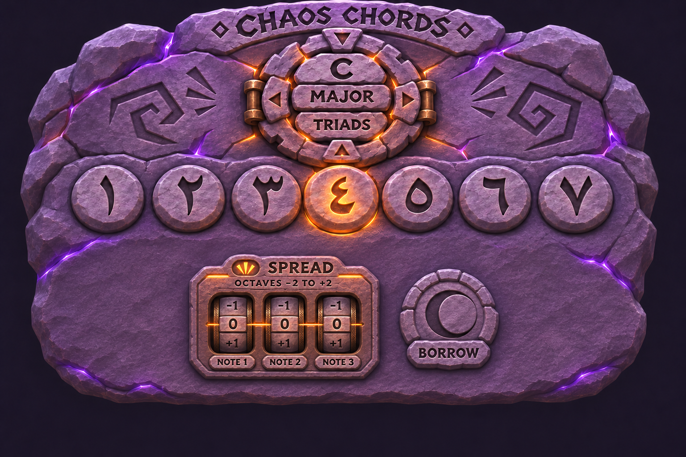

Hold a stone. Shape its sound.

C major · triadsPreset puzzle · coming later
COMING LATER
Enable sound, then hold a pad or keyboard key 1–7.
ORIGINAL CHORD—
PLAYED NOTES—
Spread moves each original chord note by whole octaves. Turn a wheel, or focus it and use ↑ / ↓.
One chord at a time · release to stop · settings apply to the next chord
Preset fixed at C major triads · preset puzzle and Borrow coming later